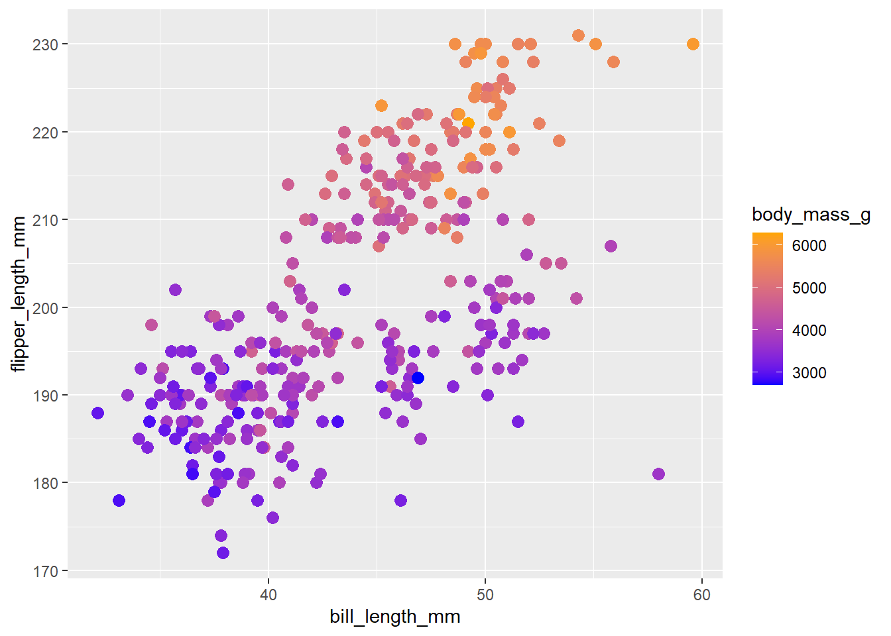
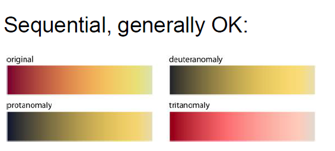
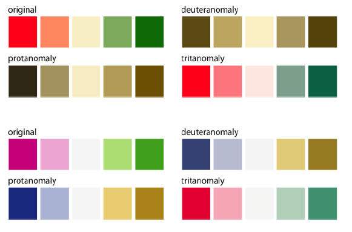
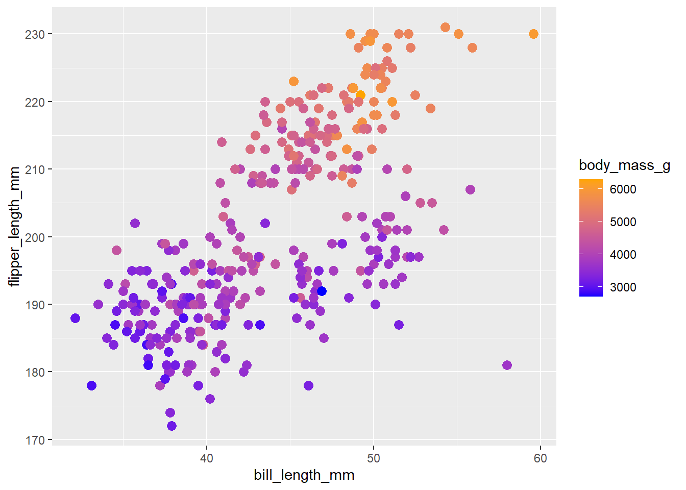
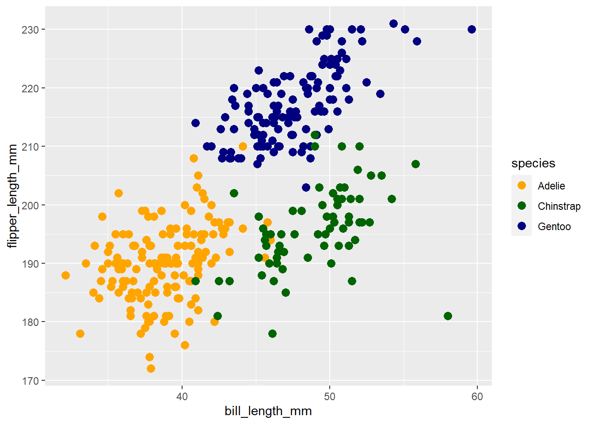
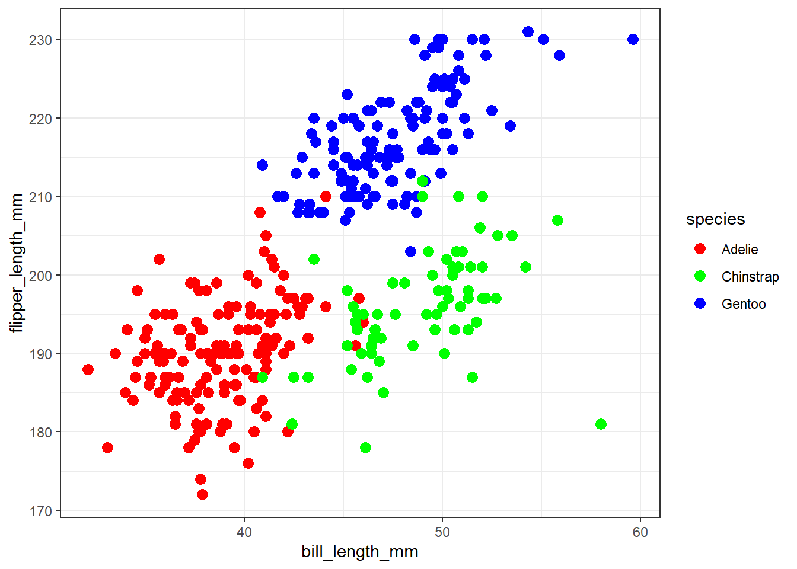
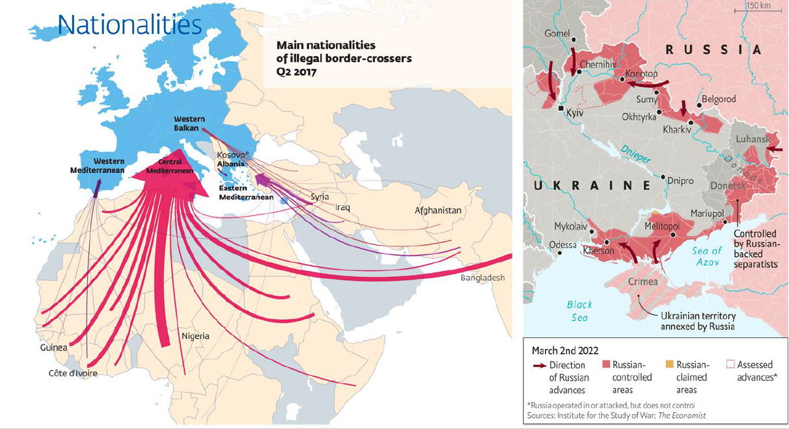
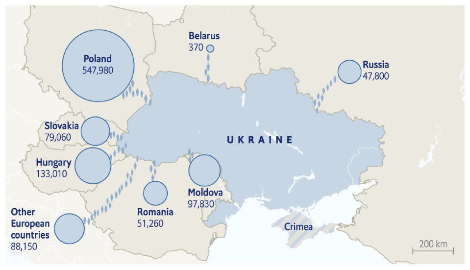
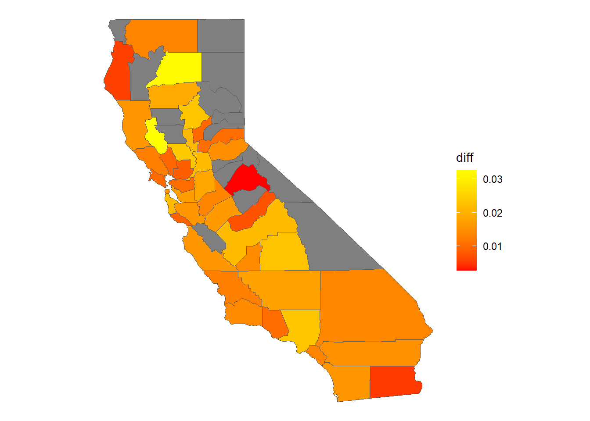
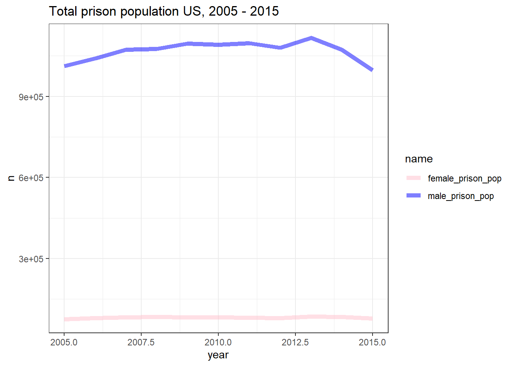

library(tidyverse)
library(palmerpenguins)
df = palmerpenguins::penguins
ggplot(data = df, aes(x = bill_length_mm, y = flipper_length_mm, color = body_mass_g)) +
geom_point(size = 3) +
scale_color_gradient(low = 'blue', high = 'orange')
This week, we’ll discuss dealing with accessibiliy in data visualization, as well as sensitive subjects and understanding how charts canbe potentially misleading.
When making visualizations it is important to take into account accessibility. In this context, accessibility means making the content more readable and understandable by everyone.
We should remember that those viewing our content, particularly if it is placed online may have issues with:
Sight
Colour perception
Motor skills
Some key ways in which we make visualisations less accessible include:
Prioritising the visual experience without consideration for people navigating via screen reader.
Color schemes that are not accessible to people who are color blind or have low vision
Interactive elements that are not reachable for people navigating via keyboard.
Color blindness (or color vision deficiency) is the decreased ability to see color or differences in color, specifically hue.
The most common is less distinction on red-green (deuteranomaly or protanomaly) or blue-yellow (tritanomaly) axis. Red green affects about 8% of males and 0.05% of females.
In order to understand how colour in data visualisation is perceived by those with CVD, we should think back to the previous week’s lesson on the differences between scales. The three key scales, as you’ll remember, are sequential (for continuous data), categorical (for text or categories), and diverging (which are sequential, but with a ‘midpoint’.
These are affected in different ways. Generally, sequential color scales are affected the least, because they are generally made up of a single hue. However, the default blue color scale provided by ggplot is not terribly good for those with sight impairments - the ‘Viridis’ color palette, which we have used last week, is a good alternative choice as it is easier to distinguish differences.

Another sequential scale type we have used is a gradient, where the color runs from one color to another. A special type of gradient is a ‘diverging’ color palette, where third color is used as a midpoint.
In both these cases, we should be mindful of using problematic color pairs. Red-green diverging, in particular, should be replaced with another color scale.

Finally, categorical color schemes (where the data is unordered, usually for categories or text), a specific palette should be used. These palettes can be found online, for instance at the website https://colorbrewer2.org/, and selecting the checkbox to show only ‘colorblind safe’ palettes.
To make these changes in our code, we’ll need to use the scale_ functions from last week. For instance, to specify the gradient colors for a scatter plot, use scale_color_gradient():
library(tidyverse)
library(palmerpenguins)
df = palmerpenguins::penguins
ggplot(data = df, aes(x = bill_length_mm, y = flipper_length_mm, color = body_mass_g)) +
geom_point(size = 3) +
scale_color_gradient(low = 'blue', high = 'orange')
To choose a specific palette for a categorical value (such as species, in this case), use scale_color_manual() and specify the colors directly.
ggplot(data = df, aes(x = bill_length_mm, y = flipper_length_mm, color = species)) +
geom_point(size = 3) +
scale_color_manual(values = c('orange', 'darkgreen', 'navy'))
Another important thing to take into account is contrast. Contrast can be defined as the difference in perceived luminance between two colors. Higher contrasts are easier to perceive for everybody, particularly those with sight impairments.
For example, in comparison to a white background (the most commonly-used colour):
Pure red has a ratio of 4:1
Pure green has a ratio of 1.4:1 (very low)
Pure blue has a ratio of 8.6:1 (quite high).
Again, think about this when designing color schemes.
For instance, try not to use colors with a low contrast ratio, particularly against a white background. By default, ggplot2 uses a grey background, but often white is a requirement or desired for design choices.
ggplot(data = df, aes(x = bill_length_mm, y = flipper_length_mm, color = species)) +
geom_point(size = 3) + theme_bw() +
scale_color_manual(values = c("#FF0000", "#00FF00", "#0000FF"))
A final consideration, particularly when making charts which are to be viewed online, is to take into account readers who use screen-reading software. We should aim to provide alt-text for images, which will be read out loud by screen readers. In doing so, you should aim to summarize the visual elements and key points of the chart.
In some cases, it may be useful to provide a table of data (provided it is not too complex), which may be easier to interpret by a screen reader.
Ethics in data visualization could be thought of as fairly representing through data and design. Both by representing data correctly (not being misleading), and not making implicit judgements with design.
One obviously unethical way to make data visualisations is by directly falsifying data. This could be on purpose, or by omission. For instance, we could easily add new data points to a dataset without anyone knowing, to change the narrative of the visualisation. However, we could also filter the data, for example by removing individual points or outliers, or just by making a choice to show parts of the data which fit a particular narrative. For example, imagine a dataset which showed temperatures rising over the past 50 years, but with a dip in the last 5. Choosing to only show the last five years on the chart may be construed as misleading and unethical.
However as we have learned, there are always choices to be made by the designer. As designers, we must tread the fine line between constructing a cohesive narrative, and using charts in misleading ways!
The second way in which we should be careful with ethics in data visualization is with introducing conscious or unconcious bias into our design choices.
The way that we use color and shape is particularly important. In many cultures, certain colors, shapes, and other visual elements have particular positive or negative connotations. We should avoid manipulating these in ways which replicate or increase cultural biases connected to certain groups.
A very clear example is the repeated use of ‘menacing red arrows’ to depict refugee and asylum seeker flows. This visual language is very reminiscent of the way in which we depict invading armies.

There are many ways around this, for example using colors with more neutral associations, and, as in a graphic by the Economist a few years back, by replacing arrows with icons of people.

Start a new .Rmd file in Posit Cloud to do the following exercises:
You have been asked to work on a historical data visualization project as part of a research project into Irish immigration in the nineteenth century.
The project will use data on the Bellevue Almshouse in New York, where poor, sick, homeless and otherwise marginalised people were often sent (both voluntarily and sometimes forcibly).
This data was transcribed from the original records by Anelise Shrout. It has been made available as a .csv file on a code repository, Github. To load this data into R, you can do so directly from the internet without having to download it first, using the following code cell.
library(tidyverse)
bellevue_df = read_csv('https://raw.githubusercontent.com/laurenfklein/QTM340-Fall21/main/corpora/bellevue_almshouse_modified.csv')
bellevue_df = bellevue_df %>% mutate(month = cut(date_in, 'month')) %>% mutate(month = lubridate::ymd(month))I have also made some small changes: I’ve made a new column containing the month of admission, rather than the day. In the final mutate, I have specified that R should read the data as a date.
Your first task is to make a few simple counts. You don’t need to save these as new datasets - simply write the code which produces the count of the relevant data. As a hint, think about group_by and summarize as being helpful here. The counts needed are:
A simple count of each gender
The average age by gender. You’ll also see there are some ‘NA’ values both in age and gender. In order to deal with these, you’ll need to use the code na.rm = TRUE in the appropriate function.
The number of admissions per month
The number of admissions per profession, per month.
Finally, create a line chart which first filters to include only the professions: c('laborer', 'married', 'spinster', 'widow', 'shoemaker') , and charts the number of admissions by profession with a separate line, per month. Hint: In order to correctly display separate lines correctly, you’ll probably need to specify both color = and group = within the aes().
After submitting this to the project manager, they have come back to you with a few extra requests:
Adjust the linewidthof the lines to something more easily readable.
Pick a different color scheme, one which specifically takes into account color vision deficiency (CVD).
For the latter, you’ll need to set the colors manually and use an appropriate scale_color_ function. You can find some appropriate color palettes on this page: http://www.cookbook-r.com/Graphs/Colors_(ggplot2), including some hints on how to use them. Note that with the correct scale, you can specify more colors than you have categories, and it will just use the first ones.
You have been asked to review and edit some data visualisations submitted as part of a project looking at incarceration rates in the US.
Specifically, you have been asked to look for ethical or accessibility issues with some plots which have been created. In order to ‘fix’ them, you can copy and paste the existing code into a new cell, and make adjustments.
In this first visualisation, the creators have attempted to show the differences between white and black incarceration rates in California in the most recent year with relatively fully available data, 2015.
The researchers calculated the rates of prison population per head of population, and also calculated the differences between the two categories of prisoner. This has been mapped using a choropleth map (which we’ll learn more about in the coming weeks).
Running the following code in order should produce this plot from scratch:
library(sf)
us_prison_pop = read_csv('https://raw.githubusercontent.com/melaniewalsh/Neat-Datasets/main/us-prison-pop.csv')us_state_abb = read_csv('https://raw.githubusercontent.com/jasonong/List-of-US-States/master/states.csv')
basemap = st_as_sf(maps::map("county", plot = FALSE, fill = TRUE))
us_prison_pop = us_prison_pop %>% left_join(us_state_abb, by = c('state' = 'Abbreviation'))
us_prison_pop2 = us_prison_pop %>%
mutate(State = tolower(State)) %>%
mutate(county_name = tolower(county_name)) %>%
mutate(county_name = str_remove(county_name, "county"))%>%
mutate(county_name = trimws(county_name, which = 'both')) %>%
mutate(ID = paste0(State, ",", county_name)) %>%
mutate(a = white_male_prison_pop/white_pop_15to64) %>%
mutate(b = black_male_prison_pop/black_pop_15to64) %>%
mutate(diff = b - a) %>%
select(ID, year,a,b,diff,State)
prison_sf = basemap %>% filter(str_detect(ID, "california")) %>%
left_join(us_prison_pop2 %>%
filter(year == 2015) %>% filter(!is.na(year)))This final cell is the visualisation itself. Once you have run all the other code, you can copy this one into a new cell and make adjustments.
ggplot() +
geom_sf(data = prison_sf, aes(fill = diff)) +
theme_void() +
scale_fill_gradient(low = 'red', high = 'yellow')
You should comment on the chosen color scheme: what could be improved and why? Make changes to a new version of the code with a more appropriate color scheme.
In this second example, the total male and female prison population has been plotted. In this case, there are a number of issues you might raise regarding the chart. Hint: as well as color schemes, look at and maybe even change the processing/filtering steps leading up to the chart. Do you think these are a fair representation of the trends in the data?
us_prison_pop %>%
# filter(State %in% c('California')) %>%
select(State, year, male_prison_pop, female_prison_pop) %>% pivot_longer(cols = 3:4) %>%
group_by(year, name) %>%
summarise(n = sum(value, na.rm = TRUE)) %>%
filter(year %in% 2005:2015) %>%
ggplot() +
geom_line(aes(x = year, y = n, color = name), size = 2, alpha = .5) +
scale_color_manual(values =c('pink', 'blue')) + theme_bw() + labs(title = "Total prison population US, 2005 - 2015")